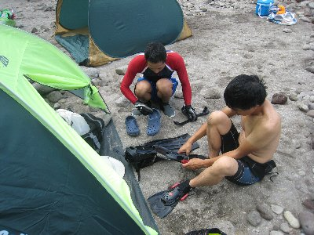
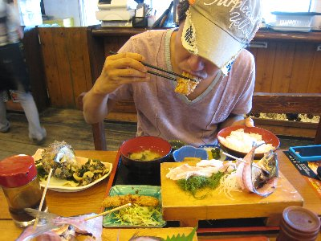

ヒリゾ浜でシュノーケル | 2012年9月 幹事：べっしー |
|---|---|
| 9月は海水も暖かくなり、海水浴客も減るので、シュノーケルをやるのには最適です。それでも休日は混み混みのヒリゾ浜に、平日休みをとって男三人で行ってきました。 今回のメンバーは、きっかー、たかにぃ、私です。 ヒリゾ浜自体は、過去に何回か紹介しているので、説明は省きます。 渡し船が動きはじめたら直ぐに浜へ行きたいので、静岡を5時出発。たかにぃが危うく寝過ごすところでしたが、なんとかセーフ。8時には中木港の駐車場に着きました。9月でお得なところは、ここの駐車場がタダになるところです。駐車場には、そこそこ車が停まっていて、ナンバーは関東圏が多いですね。平日なのによく来るなと、自分達のことを棚に上げてつぶやいてみました。 | |
 ヒリゾ浜！今日は人が少ない |  さあ準備しましょう |
| 浜での場所取りは、人が少ないお陰でで何処でもＯＫ。砂地の平たい場所をゲット！ この為に買ったサンシェードをセットし、まだ人が少ない海に繰り出します。 いつもながらヒリゾの海は綺麗で魚も沢山。さっそくウツボや、アオリイカの子供をデジカメで追いかけてみたりして。カクレクマノミも、物凄い小さいけど発見。こんな小さい子供が黒潮に乗ってやってきたのかな〜、それともここで越冬した親から生まれたのかな？ | |
 海の中の魚達 |  イソギンチャクも（このユラユラ感がたまらない） |
| 全体として小さい魚が多いのですが、ちょっと浜から右寄り（北側）の深い場所にいくと、ホントに小さい魚が群れをなして泳いでいます。この日も、何の魚が分からないけど、小指より小さい魚が何百と群れて泳いでいました。それがキラキラと輝いてメチャ綺麗です。目の前を右に行ったり左に行ったり、大きく膨れたり、素早く反転したりと、見ていて飽きません。 途中休憩で昼寝して、もう一度泳ぎに行って。一回泳ぎに行くと1時間位海に漂っているので、合計2時間ぐらいかな。海がちょっと濁ってきた12時位に、本日のシュノーケルは終了です。 最近は、午前中に遊ぶだけ遊び、どこかで遅い昼食をとり、ゆっくり家路につき、夕方には帰宅、というのんびりスタイル。 今回は、車でちょっと走って弓ヶ浜の「青木さざえ店」で昼食。魚を見て、魚を食べる！ 刺身定食、弓ヶ浜定食、アジ定食。お腹一杯。 交替運転しながら帰りました。今日も楽しかった〜♪ | |
 凄い数の魚の群れ |  魚見て、魚たべたくなっちゃった |
| 写真＆コメント ： べっしー | |